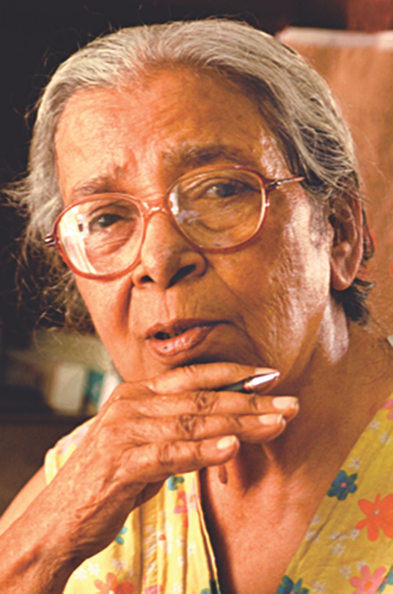

Date of Birth: January 14, 1926
Date of Death: July 28, 2016
Mahasweta Devi
Mahasweta Devi was a renowned Indian Bengali writer and social activist.
She is best known for her stories and novels that focused on the marginalized sections of society, particularly the tribal communities of India.
Devi's works often exposed the injustices faced by these communities and advocated for their rights.
Her writings were characterized by their powerful language, vivid imagery, and deep empathy for the suffering of the oppressed.
Some of her most famous works include "Draupadi," "Chotti Munda," and "Aranyak."